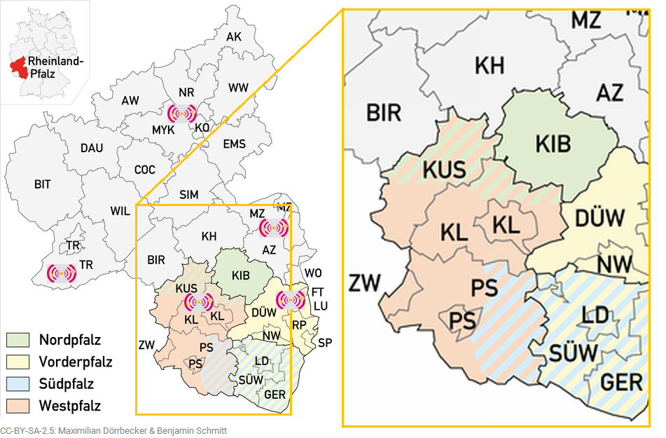
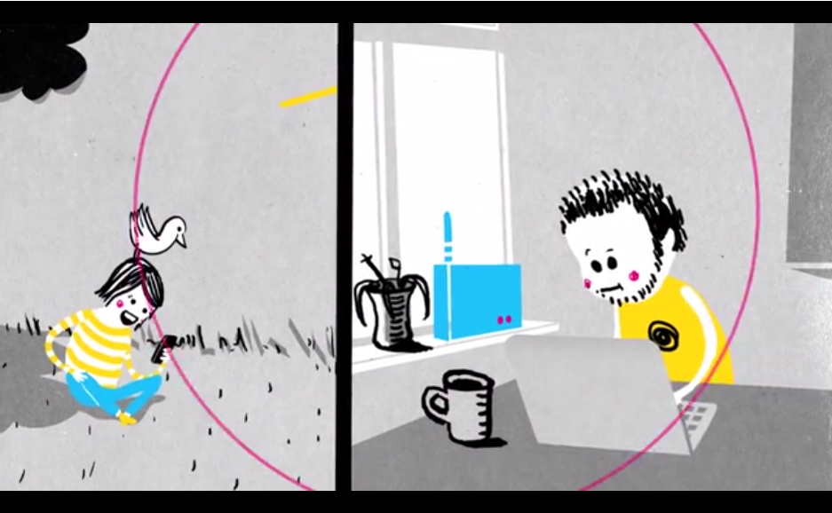
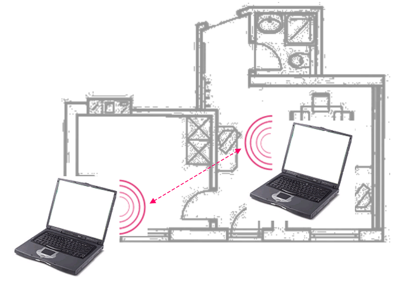
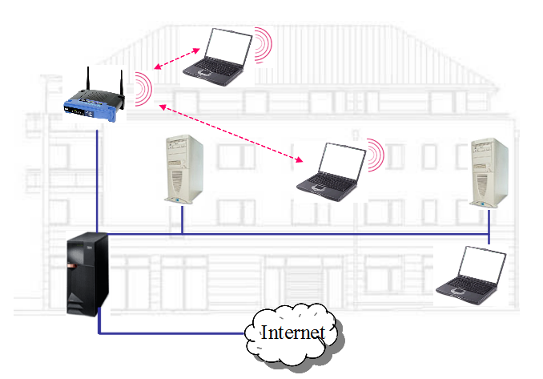
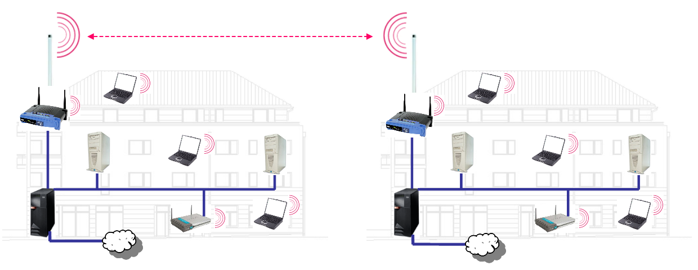
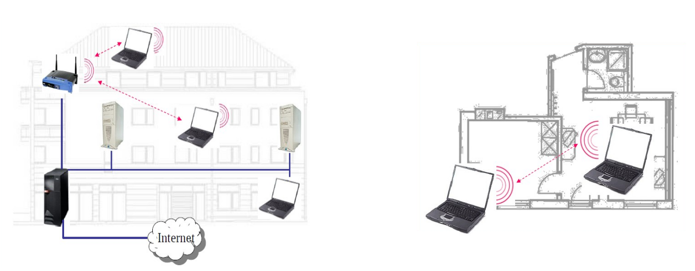

Freifunk Westpfalz
Freies WLAN für die Westpfalz
Benjamin Schmitt / @little_ben / März 2015
Was ist Freifunk Westpfalz
Wir sind ein Community-Projekt zum Aufbau von freien, dezentralen WLAN-Netzwerken in der Westpfalz.
Was ist Freifunk Westpfalz
...ein Community-Projekt zum Aufbau von freien, dezentralen WLAN-Netzwerken...
- lokaler Teil einer deutschlandweiten Initiative
- Freifunk gibt es bereits seit über 10 Jahren
- 158 Communities mit 10766 Zugangspunkten
- Projekt von Bürgern für Bürger
Was ist Freifunk Westpfalz
...ein Community-Projekt zum Aufbau von freien, dezentralen WLAN-Netzwerken...
- öffentlich (jeder/jedem zugänglich)
- nicht kommerziell (keine Geschäftsstrategie)
- im Besitz einer Gemeinschaft (nicht im Besitz einzelner)
- unzensiert, netzneutral
Was ist Freifunk Westpfalz
...ein Community-Projekt zum Aufbau von freien, dezentralen WLAN-Netzwerken...
- Funk-Netzwerk (WLAN - 2.4 und 5 GHz)
- selbstverwaltet (keine Netzwerk Hierarchie)
- höhere Ausfallsicherheit, selbstheilend
- nicht einfach abschaltbar
Wo ist Freifunk Westpfalz
Westpfalz
Kaiserlautern
Stadtpark
Freie Netzwerke - Wozu?
- Informations- und Kommunikationsfreiheit im Internet ist zunehmend eingeschränkt (VDS, Neutralität, NSA, etc.)
- Anzeichen einer sich verfestigenden digitalen Kluft:
ärmere, weniger technisch versierte und ältere Menschen nehmen wenig am Informationszeitalter teil - Graue Breitband-Bereiche ("areas of market failure")
- es macht Spaß :-)
Internet - Daseinsvorsorge
Bitte haben Sie Verständnis, dass wir in unseren Bewerbungsverfahren ausschließlich Online-Bewerbungen berücksichtigen. Papierbewerbungen können daher nicht bearbeitet werden.
(Quelle: eine Stellenausschreibung)
Freies Netz mit WLAN - Wieso?
- hohe Bandbreite (auch mobil)
- geringe Hardwarekosten, praktisch keine Betriebskosten
- darf von jedem lizenzfrei eingesetzt werden
- optimal, wo keine Kabel sind oder wenn Kabelverbindung zu teuer ist
Geschichtliche Wurzeln
- OPAL-Ghetto (nach der Wende)
- freie drahtlose Bürgernetze in Berlin und London
- Consume und free2air (London, 2000) - BerLon (Oktober 2002)
- Picopeering, wavelöten, c-base, freifunk.net - Förderverein Freie Netzwerke e. V. (2003)
- Netzbau, Communities, OLSR, B.A.T.M.A.N.
- GLUON - Firmware aus Hamburg + Lübeck (2013)
Picopeering-Agreement
- Voraussetzungen für ein Freies Netzwerk:
Freier Datentransit und einen Teil der eigenen Ressourcen anderen zur Verfügung stellen - Minimalkonsens, der in internationaler Kooperation freier Netzwerk-Communities entwickelt wurde
- Picopeering Agreement
http://picopeer.net bzw. http://picopeer.net/PPA-de.html
Technik
- Einstiegsmodell ab ca. 20 EUR, z.B. TL-WR841N/D
- Leistungsfähigere ab 45 EUR, z.B. WR3600, WR1043NDv2
- Outdoor-Geräte und Richtfunk ab 50 EUR, z.B. Ubiquiti
- openWRT basierende Geräte
Installation
- Router anschließen
- aktuelle Westpfalz-Firmware flashen
- kurze Endkonfiguration
- Freifunken!
Installationsanleitung auf
https://www.freifunk-westpfalz.de/anleitung-knoten

Installationsvarianten von Knoten im/am Haus
Mesh-Netzwerk
Netzwerkdiagramm: IST-Zustand
Netzwerkdiagramm: mit Freifunk-Router
Netzwerkdiagramm: Freifunk mit Gästen
Netzwerkdiagramm: Freifunk-Mesh
Datentransit
Das Mesh wächst ...
... von Fensterbrett zu Fensterbrett
... von Dach zu Dach
Typische Fragen
Ist das erlaubt?
- Grundsätzlich: JA
- Verwendete Frequenzen sind explizit für die öffentliche Nutzung ausgewiesen
- Es wird nicht gegen geltendes Recht verstoßen
(aber wir sind keine Rechtsberatung!) - Die Europäische Kommission empfiehlt außerdem öffentliche Breitbanddienste in Europa zu fördern
Ist das Netz sicher?
- Grundsätzlich: NEIN
- Wegen freiem Zugang ist eine Verschlüsselung in unserem offenen Netz nicht vorgesehen
- Es gibt aber Möglichkeiten für den Benutzer sichere Verbindungen bei Bedarf aufzubauen (HTTPS),
oder die gesamte Verbindung von seinem PC bis zum Ziel zu verschlüsseln, z.B. Heimarbeitsplatz wählt sich in die Firma ein (Stichwort: VPN und IPsec)
Ist das gesundheitsschädlich?
- WLAN gehört mit zu den schwächsten Strahlenquellen
- Die tatsächliche Feldstärke ist umgekehrt proportional zu der Entfernung zur Strahlenquelle
- Handy-Sendemast im Betrieb strahlt 20.000 mW
Rechtliches - Situation
- dt. Rechtsprechung seit 2010: Betreiber offener WLANs haften für Rechtsverletzungen Dritter ("Störerhaftung")
- ausgeartete Abmahnindustrie
- neuere Urteile positiv, so sieht z.B. AG Charlottenburg Freifunk als priviligiert gemäß §8 TMG
- aktuell wird ein Gesetztesentwurf zur Neufassung TMG diskutiert
- allgemein ist Bewegung in das Thema gekommen
Rechtliches - Lösung
- Die Daten des Freifunknetzes werden nicht in Deutschland in das Internet geleitet
- sondern per „Tunnel“ ins Ausland transportiert, wo keine Aufzeichnung von Nutzerdaten vorgeschrieben ist
- Betreiber des Westpfalz-Netzes ist der „Chaos inKL. e.V.“
- Ist das Legal: Ja
Chancen freier Netze I
- Mit WLAN bieten sich völlig neue, attraktive Möglichkeiten für Bildung, Jugendarbeit, Kulturprojekte und soziale Träger
- Für Regionen mit geringer finanzieller Ausstattung besteht mit WLAN die kostengünstige Möglichkeit zum Aufbau einer modernen selbstverwalteten und unabhängigen Kommunikationsinfrastruktur
Chancen freier Netze II
- Freie lokale Netzwerke können die vorhandenen Sozialstrukturen stärken und erweitern
- Inhaber von DSL Anschlüssen teilen mit Nachbarn, die keinen Anschluss bekommen können – ohne rechtliche Folgen befürchten zu müssen

Video: Freifunk verbindet!
(CC-BY-SA-2.5: Philipp Seefeldt)
Vielen Dank für Ihre Aufmerksamkeit
Dieses Dokument steht unter
CC-BY-SA-2.5: Benjamin Schmitt (FF Westpfalz).
Sofern nicht anders markiert entstammen die Bilder aus:
- freifunk-praesentation-aktuell.pdf
(CC-BY-SA-2.5: FF Berlin) - Netzwerkdiagramme: CC-BY-3.0 Felix Bosseler
- Router: TP-LINK (mit freundlicher Genehmigung)
- einige Texte: Päsentation von Wolfgang Hallmann,
FF Mainz (mit freundlicher Genehmigung)
Ad-hoc Netzwerk
Infrastruktur-Netzwerk
Vernetzung mehrere Häuser
Infrastuktur- vs. Adhoc-Netzwerk
AP-Modus
Mesh Netzwerk